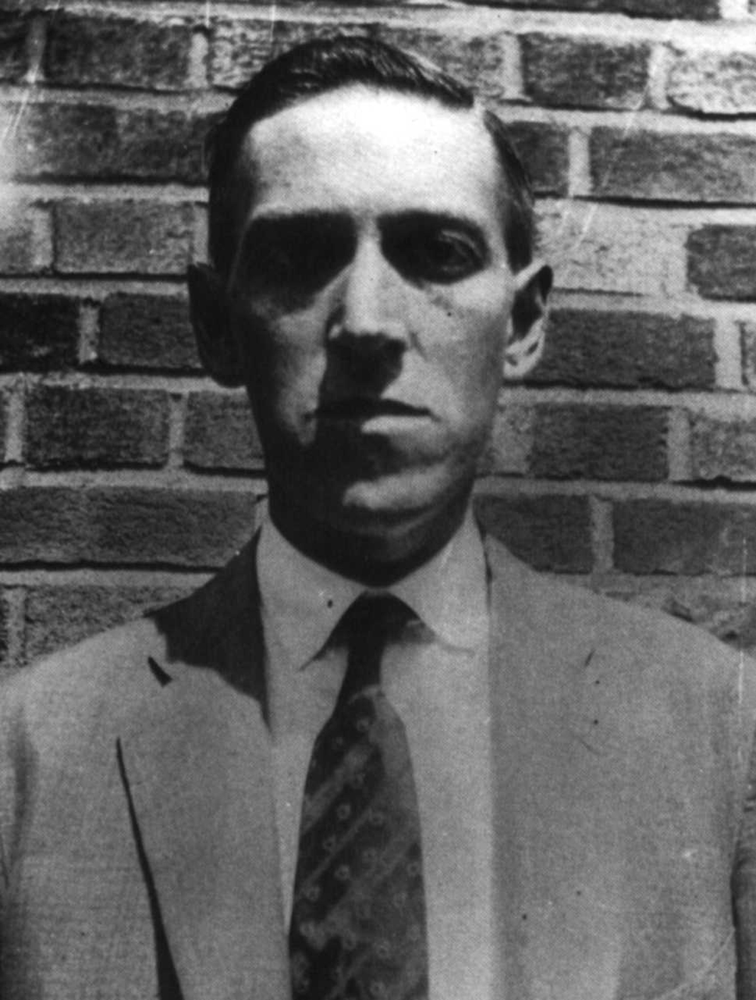

Der Begriff Cthulhu-Mythos wurde vom amerikanischen Autor August Derleth, Verleger und Briefkontakt H. P. Lovecrafts, geprägt. Cthulhu ist ursprünglich eine Schöpfung von Lovecraft. Cthulhu nimmt bei Lovecraft eigentlich keine herausragende Stellung ein. Erst August Derleth griff Cthulhu als Basis für den von ihm weitergesponnenen Mythos auf und machte ihn zum Hauptgegenstand vieler seiner Erzählungen und schuf dadurch den Begriff.
Ausgangspunkt des Mythos sind Lovecrafts Kurzgeschichten und Erzählungen, die meist im Neuengland der 1920er- und 1930er-Jahre angesiedelt sind. Als Stilmittel für seine Texte verwendete Lovecraft unter anderem wiederkehrende Elemente in Form von fiktiven Orten, Gegenständen und Wesen. Er schuf dadurch eine übergreifende Struktur, die seinen Geschichten einen scheinbaren Zusammenhang verleiht, ohne dass die Geschichten sich direkt aufeinander beziehen. Durch die mysteriöse Natur dieser wiederkehrenden Elemente schafft er eine entsprechende Atmosphäre in seinen häufig sehr rationalen Beschreibungen und erreicht zusätzlich durch den steigenden Bekanntheitsgrad dieser Elemente für den wiederkehrenden Leser, dass er auf ihnen aufbauen kann, ohne sie jedes Mal neu erfinden zu müssen.
Die von Lovecraft auf diese Weise ins Leben gerufenen Zusammenhänge zwischen seinen Erzählungen erfuhren eine noch breitere Basis durch seine Korrespondenz mit gleichgesinnten Autoren und Bewunderern. Zunächst baute Lovecraft lediglich Elemente anderer Autoren in seine Geschichten ein. „The Hound“ (dt. Der Hund) enthält zum Beispiel so viele Anspielungen auf Poe und Arthur Conan Doyle, dass es eine Parodie sein könnte.
Frank Belknap Long verwendete als erster das Necronomicon, welches Lovecraft erfunden hatte, in seiner Geschichte „The Space-Eaters“ (dt. Die Raumfresser). Im weiteren Verlauf seiner vielfältigen Korrespondenz mit anderen Autoren wurden weitere Elemente ausgetauscht, wobei nicht nur andere Autoren Lovecrafts Elemente verwendeten, sondern auch umgekehrt. Zusätzlich nahm Lovecraft oft das Überarbeiten von Erzählungen anderer Autoren an. Dabei baute er ebenfalls solche übergreifenden Elemente ein.
Nach dem Tod H. P. Lovecrafts erweiterte sich die Basis für den Mythos nochmals. Zum einen geschah dies ab 1939 durch den Nachdruck von Lovecrafts Erzählungen in gebundener Form durch Arkham House. Arkham House veröffentlichte auch neue Geschichten, die Elemente von Lovecraft und seinen befreundeten Autoren enthielten und um neue Elemente erweiterten. Dabei handelte es sich sowohl um bekannte als auch neue Autoren. Zum anderen erweiterte die Veröffentlichung des Rollenspiels Call of Cthulhu 1981 den Kreis der Leser von Lovecraft- bzw. Mythos-Geschichten erneut und enthält selbst eine Liste von Mythos-Elementen, die von potenziellen Autoren verwendet werden.
All diese Elemente wurden von diversen Autoren phantastischer Literatur aufgegriffen und auf unterschiedlichste Weise interpretiert, erweitert und verarbeitet. Aufgrund der Verschiedenheit der Verwendung von Lovecrafts Elementen, ja sogar der Elemente von Autoren, die selbst lediglich Lovecrafts Elemente verwendeten und interpretierten, ist eine Abgrenzung von Elementen, die zum Cthulhu-Mythos gehören, äußerst schwierig.
{kind=link}